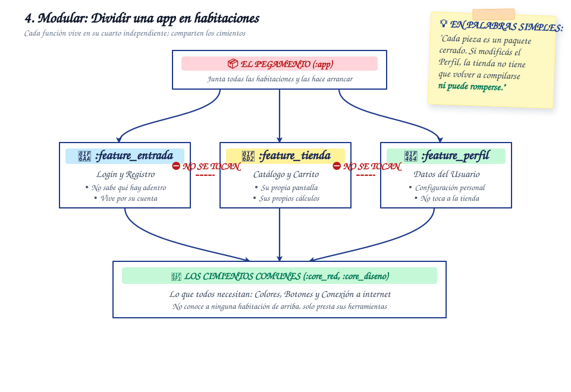

Arquitectura Modular
División del sistema en módulos independientes para optimizar tiempos de compilación y trabajo en equipo.
Animación Explicativa del Flujo
¿Qué es la Arquitectura Modular?
La Arquitectura Modular descompone un proyecto monolítico en submódulos de Gradle desacoplados. En lugar de compilar un único bloque masivo, la base de código se segmenta por funcionalidad (feature modules como :feature:login), por capas transversales (:core:network, :core:database) y módulos de diseño (:core:designsystem).
Este enfoque previene que el crecimiento de la aplicación degrade la experiencia de desarrollo, imponiendo límites arquitectónicos estrictos en el grafo de dependencias de Gradle que evitan el acoplamiento cruzado accidental entre pantallas distintas.
Diagrama Conceptual

Ventajas en Proyectos Reales
-
Compilación Incremental y Caché Remota: Gradle solo recompila los módulos alterados por el cambio actual, reutilizando artefactos cacheados y reduciendo tiempos de construcción en CI/CD drásticamente.
-
Encapsulamiento Fuerte con Modificadores Kotlin: Permite utilizar visibilidad
internalpara ocultar clases y lógicas de implementación privadas, exponiendo únicamente contratos públicos a otros módulos. -
Escalabilidad en Equipos Multidisciplinarios: Varios equipos o ingenieros pueden trabajar simultáneamente en funcionalidades aisladas sin interferencias ni conflictos masivos al fusionar ramas en Git.